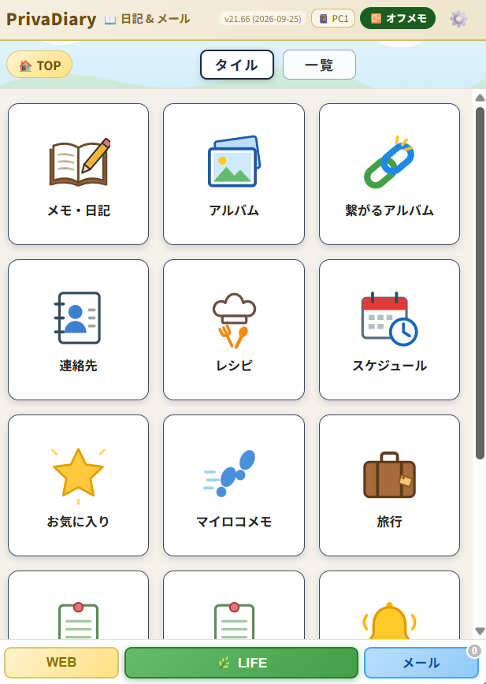

メモ & メッセージ & マイウェブページ
メモ・日記・アルバム・旅行など生活の便利アプリ集を使ってネット空間へ簡単発信ツール：PrivaDiary
PrivaDiaryは、日々の生活を便利にするための生活必須アプリ集です。
書く、残す、伝える、創造する、共有する、など多種の生活応援機能を備えています。
さらにこのアプリをプラットホームとして位置づけ、ネット空間へ手軽に発信するためのツールとして利用できます。
この発信は仮想空間上の自分専用アドレス（Eアドレス）を常に付加した発信方式（特許申請中）であるため、
改ざんが困難である仕組みを利用して、仮想アドレスでありながら長期使用でユーザからの信頼性を醸成することを目的としています。
発信者の来歴情報を知りたい一般ユーザーは、投稿サイトやサイトに表示されたEアドレスをクリックすることにより
Eマップ（仮想空間地図）上でいつでも確認することができます。
このページは、ご案内と使い方をまとめた取扱説明ページです。
日々のメモ、備忘録、予定が日記に。簡単操作
写真・手書きパレット・音声認識入力も対応
メモ記、メールの写真は自動でアルバムに分類収集
大事な予定をみんなでチェック、家族で見守る
趣味の世界をオリジナルページを創り共有
先祖から子孫へ繋ぐ
オンライン通話・TV通話つきメール
Eアドレスで自分のページを持ち、世界とつながる

![ゆのみ場](data:image/svg+xml;utf8,<svg xmlns='http://www.w3.org/2000/svg' viewBox='0 0 300 130'><rect x='8' y='8' width='284' height='5' fill='%232e9e5a'/><rect x='8' y='13' width='284' height='5' fill='%232b6fd6'/><rect x='8' y='18' width='284' height='3' fill='%232e9e5a'/><rect x='20' y='2' width='14' height='22' fill='%233b4fd0'/><rect x='100' y='2' width='14' height='22' fill='%233b4fd0'/><rect x='180' y='2' width='14' height='22' fill='%233b4fd0'/><rect x='260' y='2' width='14' height='22' fill='%233b4fd0'/><path d='M12 24 H78 V112 L62 116 L45 110 L28 117 L12 112 Z' fill='%23bfe9f7' stroke='%237aa0c8' stroke-width='3'/><text x='45' y='90' font-size='54' text-anchor='middle' fill='%2327a64a' stroke='%23ffffff' stroke-width='3' paint-order='stroke' font-family='sans-serif' font-weight='700'>ゆ</text><path d='M82 24 H148 V112 L132 116 L115 110 L98 117 L82 112 Z' fill='%23bfe9f7' stroke='%237aa0c8' stroke-width='3'/><text x='115' y='90' font-size='54' text-anchor='middle' fill='%2327a64a' stroke='%23ffffff' stroke-width='3' paint-order='stroke' font-family='sans-serif' font-weight='700'>の</text><path d='M152 24 H218 V112 L202 116 L185 110 L168 117 L152 112 Z' fill='%23bfe9f7' stroke='%237aa0c8' stroke-width='3'/><text x='185' y='90' font-size='54' text-anchor='middle' fill='%2327a64a' stroke='%23ffffff' stroke-width='3' paint-order='stroke' font-family='sans-serif' font-weight='700'>み</text><path d='M222 24 H288 V112 L272 116 L255 110 L238 117 L222 112 Z' fill='%23bfe9f7' stroke='%237aa0c8' stroke-width='3'/><text x='255' y='90' font-size='54' text-anchor='middle' fill='%2327a64a' stroke='%23ffffff' stroke-width='3' paint-order='stroke' font-family='sans-serif' font-weight='700'>場</text><text x='292' y='127' font-size='9' text-anchor='end' fill='%239aa' font-family='sans-serif'>DUMMY</text></svg>)
you know me ?
文字
手書き
写真
フォロー
![Eマップ](data:image/svg+xml;utf8,<svg xmlns='http://www.w3.org/2000/svg' viewBox='0 0 260 140'><g stroke='%23444' stroke-width='0.7'><line x1='82.0' y1='10.0' x2='34.0' y2='126.0'/><line x1='92.3' y1='10.0' x2='48.4' y2='126.0'/><line x1='102.6' y1='10.0' x2='62.9' y2='126.0'/><line x1='112.9' y1='10.0' x2='77.3' y2='126.0'/><line x1='123.1' y1='10.0' x2='91.7' y2='126.0'/><line x1='133.4' y1='10.0' x2='106.1' y2='126.0'/><line x1='143.7' y1='10.0' x2='120.6' y2='126.0'/><line x1='154.0' y1='10.0' x2='135.0' y2='126.0'/><line x1='164.3' y1='10.0' x2='149.4' y2='126.0'/><line x1='174.6' y1='10.0' x2='163.9' y2='126.0'/><line x1='184.9' y1='10.0' x2='178.3' y2='126.0'/><line x1='195.1' y1='10.0' x2='192.7' y2='126.0'/><line x1='205.4' y1='10.0' x2='207.1' y2='126.0'/><line x1='215.7' y1='10.0' x2='221.6' y2='126.0'/><line x1='226.0' y1='10.0' x2='236.0' y2='126.0'/><line x1='82.0' y1='10.0' x2='226.0' y2='10.0'/><line x1='77.2' y1='21.6' x2='227.0' y2='21.6'/><line x1='72.4' y1='33.2' x2='228.0' y2='33.2'/><line x1='67.6' y1='44.8' x2='229.0' y2='44.8'/><line x1='62.8' y1='56.4' x2='230.0' y2='56.4'/><line x1='58.0' y1='68.0' x2='231.0' y2='68.0'/><line x1='53.2' y1='79.6' x2='232.0' y2='79.6'/><line x1='48.4' y1='91.2' x2='233.0' y2='91.2'/><line x1='43.6' y1='102.8' x2='234.0' y2='102.8'/><line x1='38.8' y1='114.4' x2='235.0' y2='114.4'/><line x1='34.0' y1='126.0' x2='236.0' y2='126.0'/></g><g font-size='6' fill='%23555' font-family='sans-serif' text-anchor='end'><text x='76.6' y='17.8'>005R</text><text x='71.8' y='29.4'>006R</text><text x='67.0' y='41.0'>007R</text><text x='62.2' y='52.6'>008R</text><text x='57.4' y='64.2'>009R</text><text x='52.6' y='75.8'>010R</text><text x='47.8' y='87.4'>011R</text><text x='43.0' y='99.0'>012R</text><text x='38.2' y='110.6'>013R</text><text x='33.4' y='122.2'>014R</text></g><text x='256' y='137' font-size='8' text-anchor='end' fill='%239aa' font-family='sans-serif'>DUMMY</text></svg>)
Eマップ